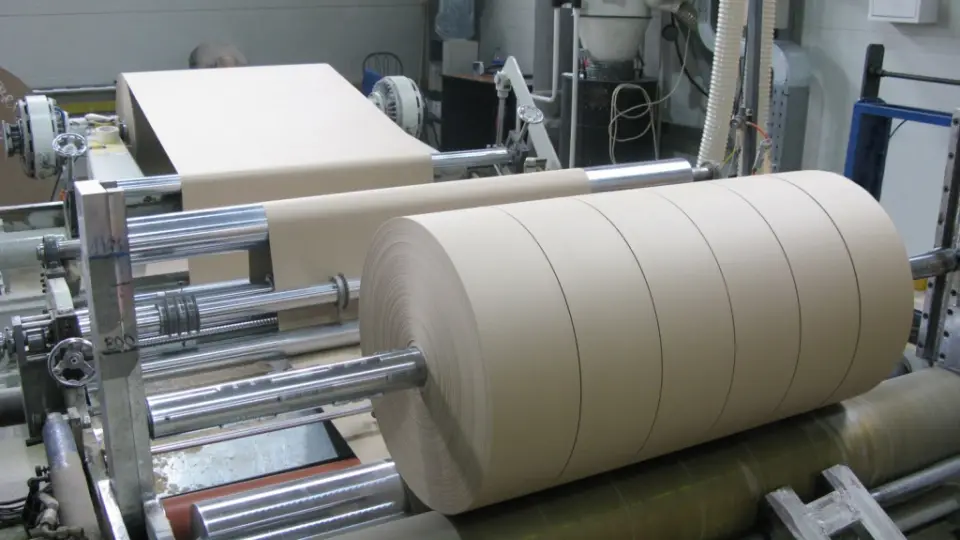
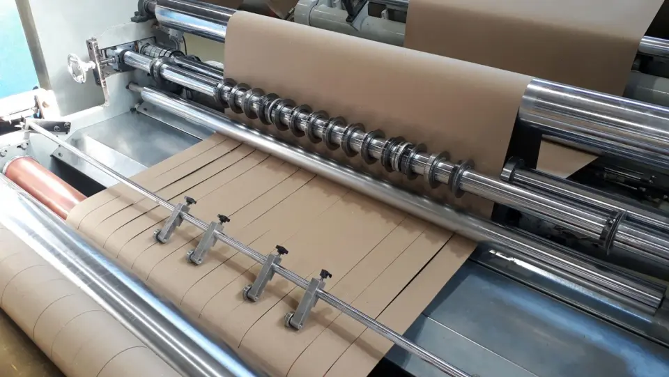
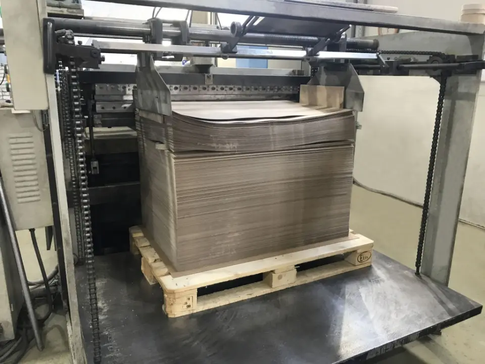

Картон из Петербурга с 1872 года
Завод «Картонтоль» делает картон из макулатуры: пять марок в рулонах, листах и картонной ленте. Посчитайте рулон, вставьте письмо с запросом — заявка заполнится сама.

Пять марок картона
Как заказать
- Посчитайте рулон или листы
Длина и вес рулона по диаметру, вес листа и листов в тонне. Калькулятор считает, пока вы вводите.
- Вставьте письмо с запросом
Например,
20 т, 450 г/м², рулон 1020 мм
. ИИ разберёт текст и заполнит заявку: продукцию, граммаж, ширину, объём, город. - Отправьте заявку в отдел продаж
Скопируйте текст или откройте письмо на sale@kartontol.ru. Сайт сам ничего не отправляет.
Режем в листы и ленту
По желанию заказчика картон нарезают в листы или в картонную ленту в бобинах. В цехе переработки, открытом в 2017 году, работают флаторезка и продольно-резательный станок: до 200 т картона в пластинах и 1200 т в бобинах в месяц.


[нужны данные: текущая мощность цеха, форматы листов и ширина бобин — цифры выше из новости 2017 года]
Покупаем макулатуру
Завод работает на макулатуре и покупает её у поставщиков. Принимаем кипованную, марку МС-5Б — и в навал. Офисные архивы принимаем на уничтожение с актами, без пластиковых папок и файлов.
- МС-1А
- МС-2А
- МС-5Б
- МС-6Б
- МС-7Б
- МС-9В
- МС-13В
Приём макулатуры
[нужны данные: цены, часы и въезд для сдачи, требования к влажности]